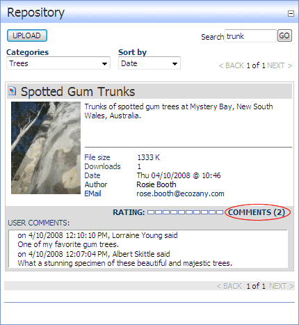

How to view comments added to an item in the Repository module. Note: Comment viewing may not be available to all users. The number of comments added to an item will be displayed on the COMMENTS link. E.g. COMMENTS (0) indicates no comments, COMMENTS (2) indicates 2 comments.

Viewing comments